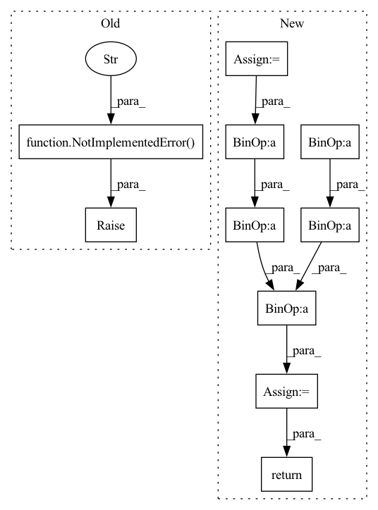

Pattern ID :6365
Before Change
raise NotImplementedError("Not Implemented." )
def iou_coe(output, target, threshold=0.5, axis=(1, 2, 3), smooth=1e-5):
Non-differentiable Intersection over Union (IoU) for comparing theAfter Change
target = _cast(target, threshold)
inse = torch.sum(torch.multiply(output, target), dim=axis)
l = torch.sum(output, dim=axis)
r = torch.sum(target, dim=axis)
hard_dice = (2. * inse + smooth) / (l + r + smooth)
hard_dice = torch.mean(hard_dice)
return hard_dice
def iou_coe(output, target, threshold=0.5, axis=(1, 2, 3), smooth=1e-5):In pattern: SUPERPATTERN
Frequency: 3
Non-data size: 10
Instances Fragment ID: 22208466
Project Name: tensorlayer/tensorlayerx
Commit Name: 21bf2328ccadff5a24520c774d17bfd6d5e05fa4
Time: 2022-01-26
Author: laicheng_vip@163.com
File Name: tensorlayerx/losses/torch_cost.py
M Class Name: AnonimousClass
N Class Name: AnonimousClass
M Method Name: dice_hard_coe(5)
N Method Name: dice_hard_coe(5)
M Parent Class:
N Parent Class:
M File Name: tensorlayerx/losses/torch_cost.py
N File Name: tensorlayerx/losses/torch_cost.py
M Start Line: 223
M End Line: 223
N Start Line: 227
N End Line: 234
Before Change
raise NotImplementedError("TODO")
def predict(self, mean: Tensor, cov: Tensor, kwargs: Dict[str, Tensor]) -> Tuple[Tensor, Tensor]:
raise NotImplementedError("TODO" )
class ExpSmooth(StateSpaceModel):
After Change
def predict(self, mean: Tensor, cov: Tensor, kwargs: Dict[str, Tensor]) -> Tuple[Tensor, Tensor]:
F = kwargs["F"]
K = kwargs["K"]
R = kwargs["R"]
mean = (F @ mean.unsqueeze(-1)).squeeze(-1)
// TODO: cheaper to check cov!=0 before applying FCF"?
cov = F @ cov @ F.permute(0, 2, 1) + K @ R @ K.permute(0, 2, 1)
return mean, cov
class ExpSmooth(StateSpaceModel): Fragment ID: 22208448
Project Name: strongio/torchcast
Commit Name: 8210da6ee85f13f07cdbd7b237b9abc6ad07be3b
Time: 2021-06-18
Author: jacob.dink@strong.io
File Name: torchcast/exp_smooth/exp_smooth.py
M Class Name: ExpSmoothStep
N Class Name: ExpSmoothStep
M Method Name: predict(4)
N Method Name: predict(4)
M Parent Class: StateSpaceStep
N Parent Class: StateSpaceStep
M File Name: torchcast/exp_smooth/exp_smooth.py
N File Name: torchcast/exp_smooth/exp_smooth.py
M Start Line: 48
M End Line: 48
N Start Line: 47
N End Line: 53
Before Change
raise NotImplementedError("Not Implemented." )
def dice_hard_coe(output, target, threshold=0.5, axis=(1, 2, 3), smooth=1e-5):
Non-differentiable Sørensen–Dice coefficient for comparing the similarityAfter Change
inse = torch.sum(output * target, dim=axis)
if loss_type == "jaccard":
l = torch.sum(output * output, dim=axis)
r = torch.sum(target * target, dim=axis)
elif loss_type == "sorensen":
l = torch.sum(output, dim=axis)
r = torch.sum(target, dim=axis)
else:
raise Exception("Unknow loss_type")
dice = (2. * inse + smooth) / (l + r + smooth)
dice = torch.mean(dice)
return dice
def dice_hard_coe(output, target, threshold=0.5, axis=(1, 2, 3), smooth=1e-5): Fragment ID: 22208465
Project Name: tensorlayer/tensorlayerx
Commit Name: 21bf2328ccadff5a24520c774d17bfd6d5e05fa4
Time: 2022-01-26
Author: laicheng_vip@163.com
File Name: tensorlayerx/losses/torch_cost.py
M Class Name: AnonimousClass
N Class Name: AnonimousClass
M Method Name: dice_coe(5)
N Method Name: dice_coe(5)
M Parent Class:
N Parent Class:
M File Name: tensorlayerx/losses/torch_cost.py
N File Name: tensorlayerx/losses/torch_cost.py
M Start Line: 196
M End Line: 196
N Start Line: 189
N End Line: 200